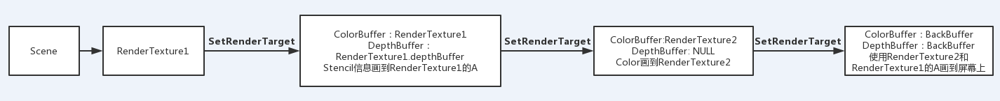
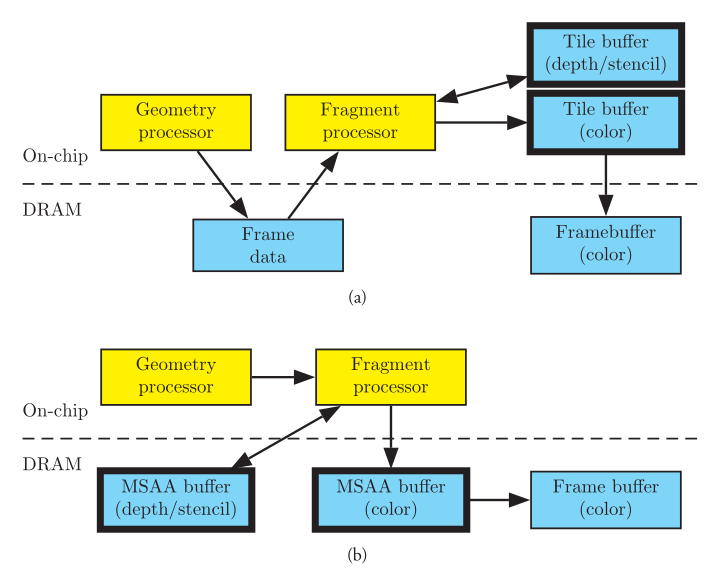

后处理效率问题和Tile-Based架构下的Frame Buffer
后处理效率问题和Tile-Based架构下的Frame Buffer
在测试后处理效率的时候发现一个诡异的问题，自己预期的一个应该快的流程反而慢了。
测试环境：Unity2018以及一堆手机
大致流程如下：
- 第一种流程
 - 第二种流程

两种做法的区别是：第一种是把Stencil信息画到了RenderTexture1的Alpha通道，画到屏幕上时再采样RenderTexture1，利用它的Alpha信息来Discard掉不需要的像素。第二种是在画到屏幕时再绑定到RenderTexture1的DepthBuffer，利用Stencil测试来抛弃不需要的像素。讲道理，应该第二种做法要快，因为省掉了拷贝Stencil这一步，而且可以确定的是第二种做法的EarlyZ是生效了，这样就不会因为先计算Fragment再做Stencil Test而变慢，那是为啥捏？？？
找呀找呀找终于查清了背后的真相：第二种流程慢的原因在于最后一步的FrameBuffer绑定以及测试平台是移动平台。
首先需要了解Tile-Based GPU的特性。
Tile-Based GPU
（转自http://www.cnblogs.com/gameknife/p/3515714.html>）
特性
OpenGL的管线需要大量的现存带宽。比如：每个像素需要从Depth/Stencil缓存读取值进行比较，然后把新值写回Depth/Stencil，同时把颜色写入颜色缓存，这里就传输了12byte(color = 4byte, d/s = 4byte, d/s读写，Color只写（不考虑混合），一共就是4+4+4=12byte)。如果加上overdraw、颜色混合、多通道算法、多采样抗锯齿，一个像素传输100byte是一件轻轻松松的事情，因为最多有4bytes需要用来显示一个像素，这是一个队带宽和电能的过渡消耗。
为了应对这种消耗，桌面GPU通常都会采用压缩技术来减少带宽消耗，而大多数移动GPU都使用了Tile-Based渲染。
这些GPU将帧缓存（framebuffer，包括深度缓存、多采样缓存等），从主内存移到了一块超高速的on-chip存储器上。这样，由于存储器on-chip了，他就和计算发生的芯片无限接近，这样计算芯片就能以远低于常规消耗的电能来读写存储器了。通常on-chip存储器都很小，如果要做的很大就需要很多硅片，所以on-chip存储器或称tile缓存，在有些GPU重小到只能容纳16x16像素。
这样就带来了一些新的挑战：如何在如此小的一块tile缓存中渲染出高分辨率的图像？解决方案就是把OpenGL的帧缓存切割成16x16的小块（这就是Tile-Based渲染的命名又来），然后一次就渲染一块。对于每一块tile: 将有用的几何体提交进去，当渲染完成时，将tile的数据拷贝回主内存，如图所示。这样，带宽的消耗就只来自于写回主内存了，那是一个较小的消耗：没有d/s，没有重绘的像素，没有多采样缓存。同时，消耗极高的深度/模板测试和颜色混合完全的在计算芯片上就完成了。

上面的图表表示了tile-based GPU中数据的流向。最大的带宽消耗在像素处理器和tile buffer之间，他们都位于on-chip存储器上。相对的，下面的图表是立即模式GPU的数据流向，多采样，颜色，深度，模板缓存都位于主存储器上。数据的流向需要经过存储总线。
现在，我们回到OPENGL API。这个没有根据tile-based架构来设计的渲染API。OPENGL API是典型的立即模式：他描述在当前状态下需要绘制的三角形，而不是提供一个装载了所有三角形和其状态的场景结构。因此，在tile-based架构上实现opengl，我们需要在一帧内收集所有提交过的三角形，并在之后再一并使用它们。相对的，在早期的固定管线gpu上，这一切工作都是通过软件方式完成的。现在大量的可编程移动平台gpu设计了专门的硬件单元来处理这件事(注：比如powervr的tiler等)。对于每个三角形，我们使用gl_position的输出语义来决定哪个tile可能会被这个三角形影响，从而将这个三角形保存进这个tile的区域数据结构。同时，每一个三角形还需要将当时的渲染状态打包，例如：ps的shader，常量寄存器，深度判断方式，等等。当一个tile渲染结束后，区域数据结构就会被用于查找和这个tile相关的三角形以及像素渲染状态。
这样看来，我们貌似将一个带宽的问题挪到了另一个地方：不同于顶点数据立即的被光栅化然后被像素着色，在tile-based架构中，三角形会被保存下来以备之后使用。这样的话，就需要有足够的内存来保存原始顶点数据，顶点着色器的输出结果，三角形索引，像素状态，以及其他的一些在区域数据结构中的内容。我们可以把这些收集的数据称为frame data（ARM文档把这些数据叫做多边形列表polygon lists，而Imagination Technologies文档把他们称为参数缓存parameter buffer）。tiled-based GPU是成功的，因为这些额外的数据读写对带宽需求一般会比我们通过on-chip操作节省下来的带宽开销要小得多。只要提交的三角形保持在一个合适的水平，这个说法就一直是成立的。而过度的细分模型的几何表面，会使得frame data过度膨胀，从而导致tile-based GPU的优势不再，反而由于frame data的高带宽消耗，反而比立即模式更慢。
FrameBuffer
当我们在做性能调校时，关于tile-based GPU最需要铭记的一件事就是：我们正在渲染的这一帧并不是framebuffer而是frame data。他是生成framebuffer的一系列数据：转换过的顶点，多边形，状态切换。不同于framebuffer，这些数据是随着DRAW CALL的增长而增长的。所以保证每一帧正确的终止是非常重要的，否则frame data会变得无穷的大。
当交换双缓冲窗口时，窗口系统会负责交换BACK BUFFER。在EGL和GLX这两种窗口系统中都有允许使BACK BUFFER失效的实现。因此，驱动程序可以在每次交换的时候，将frame data丢弃掉。然后从一张空白的画布开始。（EGL实现中，程序可以设置让后备缓冲保留，在下一节中会详细介绍）。
在使用framebuffer objects的时候，情况就变得更加复杂了，framebuffer objects不存在一个“交换”的操作。特别的，可以考虑使用glClear操作。典型的桌面GPU是立即模式架构的（immediate-mode），意味着他们在三角形准备好的时候就开始绘制像素。在一个立即模式的GPU上，一个glClear的调用就直接将clear值写入framebuffer了，因此这个代价是较高的。程序员们会使用各种技巧来避免这个操作，比如：如果他们知道接下来将会完全覆盖的绘制，他们就不clear颜色buffer。交替的利用半深度空间来避免clear深度缓存。然而，这些技巧只是在以前有用，他们已经被硬件级别的优化给超过，甚至，可能由于和硬件优化冲突而降低效率！(注：这儿的说法实在不能完全苟同…很多避免clear的操作还是很有用的)
在tile-based架构中，防止clear可能对于性能来说是个灾难（注：没错，绝对是一个大灾难，导致你的帧率下降为1/4都有可能），因为每一帧都是构建在frame data中的，清空buffer的时候会简单的释放掉frame data中的已有的数据。换句话说，glClear的性能代价不仅非常的低，而且他还能通过抛弃冗余的frame data而提高效率。这个frame data应该也包括Tile Buffer（Color Buffer、Depth Buffer）的内容，当绑定一个framebuffer时如果调用glClear也就不会加载这个framebuffer上旧的Color Buffer和Depth Buffer数据。
分析
第二种流程的问题就出在最后一步，SetRenderTarget是Unity的Command Buffer的一个接口：
1 | SetRenderTarget(RenderTargetIdentifier color, RenderBufferLoadAction colorLoadAction, RenderBufferStoreAction colorStoreAction, RenderTargetIdentifier depth, RenderBufferLoadAction depthLoadAction, RenderBufferStoreAction depthStoreAction); |
最后一步因为要使用RenderTexture1的depth buffer，depthLoadAction参数就会传递Load，并且不Clear DepthBuffer，这样就会加载RenderTexture1的depth buffer之前的数据到Tile Buffer使用，这就是导致效率低的根本原因，而且RenderBufferLoadAction的注释也写明了这一点，一定要避免类似这种操作！！！
1 |
|